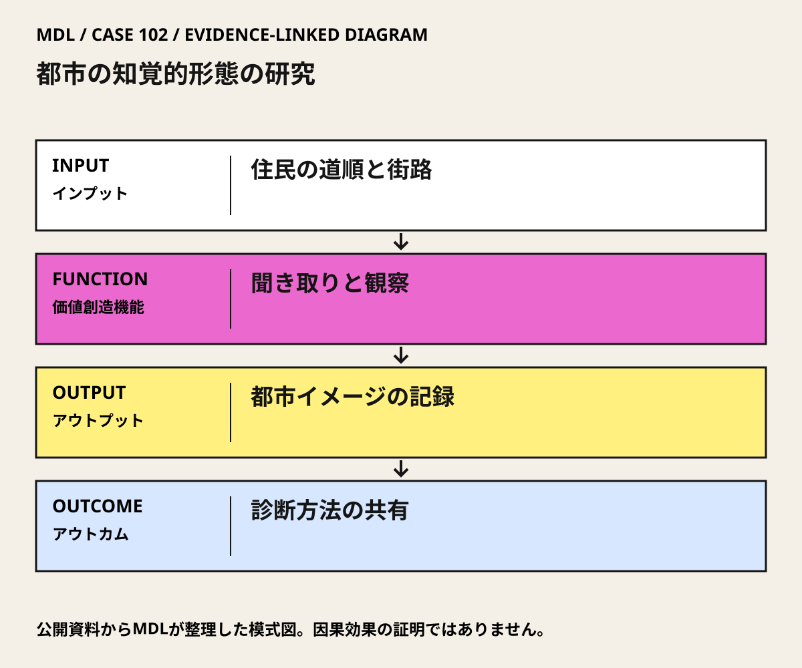

I / INPUT
何を持ち込んでいるか。
活動の出発点となる資源と課題を分けて整理します。「自社」は、その場・制度を運営する組織を指します。
II / VALUE CREATION FUNCTIONS
資源を、どう価値へ変えるか。
以下は既存の8ステップへの編集上の対応づけです。各取り組みの公式な工程名や、全工程を自前で担うことを意味しません。
III / OUTPUT
直接、何が生まれたか。
試作品、データ、契約、標準、育成した人材など、活動から直接生まれたもの。
1960年のThe Image of the Cityと調査資料。MITにはBoston調査の約2,000点の写真が残る。
公開資料で確認出典 1
IV / OUTCOME
その結果、何が変わったか。
実際の利用、行動、業務、事業、地域の変化。報告された変化と、当該活動に帰属できる効果は区別します。
都市の知覚を検討する研究方法が文献と記録として共有された。
案内の改善、迷いの減少、生活の質向上という実装効果は、この研究紹介資料では未確認。
公開資料では未確認
PROJECT IN FOCUS / 具体的な事例
都市の知覚的形態の研究
確認できた段階：住民の都市イメージと現地観察を比べる研究 調査確認日 2026-10-06
誰の課題を、どう扱ったか
生まれたもの
1960年のThe Image of the Cityと調査資料。MITにはBoston調査の約2,000点の写真が残る。
評価の限界：少数の住民の回答に基づく研究で、全住民の代表性や他文化への普遍性を保証しない。わかりやすさは都市の価値の一側面であり、居住費、差別、身体条件などの問題を置き換えない。
DESIGN BACKWARDS FROM IMPLEMENTATION
社会実装から逆算して、
何を先に整えているか。
実証の先にある導入・運用・継続から、この事例の設計を読み解きます。原典で確認できる仕組みと、MDLの設計解釈・他地域へ応用するための提案を区別して読んでください。「提案」「未実施」と記す内容は、当地で実施済みの工夫ではありません。仕組みの存在と、全案件で成果が出たことも別に扱います。
MORE DETAIL / 運営・根拠・応用
運営の全体像と、学びを深める資料。
費用負担、公表値、応用条件、写真・動画、原典を続けて確認できます。
01どう動かしているのか。
少数の住民が語る都市の姿や道順と、訓練を受けた調査者の現地観察を照合。個人の経験から、道・境界・地区・結節点・目印などの関係を読む方法を組み立てた。
意思決定と本人の関与：研究上の問いは、都市の形が人にどう認識されるか。行政による整備決定や住民の共同決定を実施した研究ではなく、今後の設計・案内改善を考える診断材料である。 Kevin LynchはGyörgy Kepesと共同で都市形態の知覚を研究。住民調査と現地観察を用い、都市イメージの方法を整理した。
- 経験から都市を読む
- 語りと現地観察を照合する
- 方法を記録し次の設計へ渡す
02誰が負担し、誰が担うか。
Rockefeller Foundationの研究助成。金額、個別調査の費用配分は未確認。
制度やプログラムの財源と、各参加企業・地域に発生する費用は同じではありません。公開範囲を超える案件別予算・契約条件は未確認です。
03確認できたこと。
04日本で活かすなら。
五要素をチェックリストで埋めるだけでなく、誰の見え方を採用し誰を取りこぼすかを調べる。都市全体の優劣ではなく、具体的な利用場面の診断に使う。
05そのまま真似できないこと。
少数の住民の回答に基づく研究で、全住民の代表性や他文化への普遍性を保証しない。わかりやすさは都市の価値の一側面であり、居住費、差別、身体条件などの問題を置き換えない。
06次に、何を確かめるか。
提案・未実施：提案・未実施：駅から公共施設までの一経路を、同意した来訪者・住民に説明または描いてもらい、歩行観察と比べる。現状・仮の案内・分岐の整理を比較する。
担い手：施設の案内担当が改善責任、アクセシビリティ担当が利用条件、調査担当が匿名記録を管理。
測るもの：分岐での迷い、所要時間、本人の安心感、移動制約別の困難を前後で確認。
継続：複数の利用者群で迷いが減り、通行と利用の権利を妨げない。
修正：特定の言語・身体条件だけで改善しないなら表示・経路を変更。
停止：安全上の問題や不要な個人情報の収集が生じる。
07写真・図と原資料で確かめる。
現場の写真を見る ↑
DIAGRAM: モビリティデザインラボ · 根拠資料 ↗
図の説明
公開資料に基づく模式図。住民の道順と街路 → 聞き取りと観察 → 都市イメージの記録 → 診断方法の共有。実景や地理的配置を示さない。
2026-10-06 · MDL作成の説明図。第三者の写真・図面の複製ではありません。
冒頭写真：ボストンのノースエンド地区にある街路
原資料で、当時の調査・実践を読む ↗08原典を読む。
Year 100 – 1960: The Image of the City by Kevin Lynch ↗
研究主体、研究助成、方法、主著と記録の成果
本文公開・英語。2026-10-06確認。
Lynchの原著と都市の知覚を扱う問題設定
原著の出版社紹介・書誌への入口。書籍全文の無料公開ではない。2026-10-06確認。